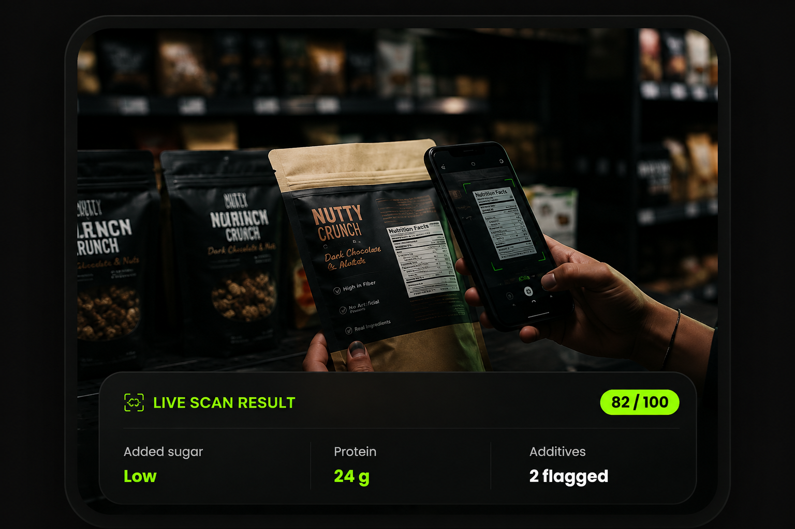

Smart Technology
AI makes complicated food labels easier to understand.
ScanBite was built for the two minutes you spend in the grocery store questioning on ingredient list. One scan turns confusing food packaging into clear nutritional information — so you can make healthier choices without guesswork.

At ScanBite, our goal is to empower everyone to make informed food choices using the power of Artificial Intelligence.
AI makes complicated food labels easier to understand.
Get useful nutrition insights before choosing a product.
Turn a product scan into clear information within seconds.
Every day, millions of people purchase packaged food without understanding what is inside. Long ingredient lists and complicated nutrition labels make healthy choices difficult.
ScanBite combines Artificial Intelligence and nutritional insights to make food information simple, clear and useful.
“Simple information can lead to smarter food choices.”
ScanBite makes healthy eating effortless in just four simple steps.
Open ScanBite and scan the barcode or ingredient label.
Our AI reads ingredients and detects additives instantly.
View calories, nutrients and an easy-to-understand health score.
Make healthier food choices with confidence.
Advanced AI accurately analyses food ingredients in seconds.
Understand important nutrients and ingredients at a glance.
Make food decisions with information you can understand.